This task is called, together with sensitivity, by the perl task esensitivity. The descriptions for all three of these tasks should be consulted together.
The overall purpose of esensitivity
is to create maps of the minimum count rate of a point source which would just be detectable by eboxdetect. The first part of the algorithm (which is described in the sensitivity
task documentation) calculates the minimum counts within the detection box which would just be detectable; in order to convert this counts-within-a-box to total count rate of the whole source , esensitivity
needs to know the ratio between the two across the width of the instrument field of view. This ratio map is calculated by econvolverprep
followed by asmooth. econvolverprep
first creates a list of small convolver images, each of which is the PSF truncated within the detection box. Each convolver corresponds to a separate section of the camera field of view. The sections are created by dividing up the field of view in a polar fashion into naxial by nradial divisions. An `index image' relating each convolver to its appropriate section is also constructed by econvolverprep
and transmitted to asmooth.
, esensitivity
needs to know the ratio between the two across the width of the instrument field of view. This ratio map is calculated by econvolverprep
followed by asmooth. econvolverprep
first creates a list of small convolver images, each of which is the PSF truncated within the detection box. Each convolver corresponds to a separate section of the camera field of view. The sections are created by dividing up the field of view in a polar fashion into naxial by nradial divisions. An `index image' relating each convolver to its appropriate section is also constructed by econvolverprep
and transmitted to asmooth.
The ratio between the total count rate of a source and the expected number of counts to fall within the detection box is calculated as follows. Suppose the square detection box, of side 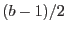 for integer 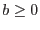, is centred on image pixel 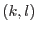. If we assume that a source detected in this box has the centre of its PSF within the central pixel, but that any position within this central pixel is equally likely, then the average number of counts expected in the box, in proportion to the total count rate  counts 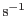, is given by
counts 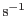, is given by
I use here the convention that the continuous coordinate value  becomes equal to the pixel indices at the centre of the pixel. The quantity
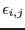 is the exposure in seconds at pixel 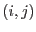 and 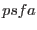 is the `pixel-averaged' PSF, ie
becomes equal to the pixel indices at the centre of the pixel. The quantity
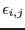 is the exposure in seconds at pixel 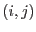 and 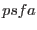 is the `pixel-averaged' PSF, ie
The PSF (in units of 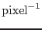) is assumed to be normalized such that
The integrals in equation 1 cannot of course be evaluated directly in a numerical context but must be replaced by sums, viz:
At present the task has both  and 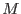 set to 0, in other words 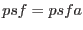. If this ever seems to present a major bottleneck on the accuracy of the output of esensivity
I may decide to increase the resolution.
and 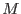 set to 0, in other words 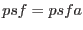. If this ever seems to present a major bottleneck on the accuracy of the output of esensivity
I may decide to increase the resolution.
The PSF used at present is the medium-accuracy one obtainable from the cal library interface CAL_getPsf. This is returned as an array, I don't know whether of point samples or of the psf integrated across the array pixel size. The medium-accuracy PSF was obtained via scisim ray-tracing experiments rather than any analytical calculation, thus point samples would seem more likely. In any case neither the pixel size nor orientation of the returned array match in general the image coordinate system on which source detection is performed: the PSF image must therefore be rebinned to the source-detection system. This process unavoidably entails an additional loss of precision.
Note that the output of econvolverprep and asmooth is actually 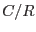, which has units of seconds. This may be considered the exposure `seen' within the detection box by eboxdetect.